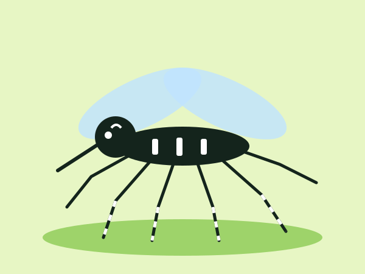
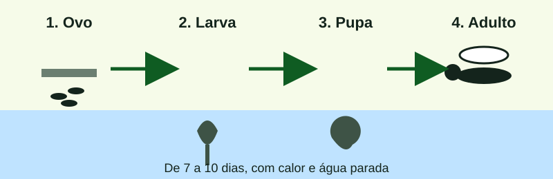

02 — O mosquito
Aedes aegypti, o mesmo vetor de três vírus
Preto, com listra branca em forma de lira no tórax e anéis brancos nas pernas. Vive perto de gente, dentro e em volta das casas. Transmite dengue, zika e chikungunya.
Só a fêmea pica, em geral de dia, no começo da manhã e no fim da tarde. Ela precisa de sangue para formar os ovos.
Ciclo de vida: do ovo ao adulto

Ovo
A fêmea cola os ovos na parede do recipiente, acima da água. Eles sobrevivem meses secos e eclodem na próxima chuva.
Larva
Nasce na água parada e limpa — prato de vaso, calha, pneu, caixa destampada. Quatro estágios, em poucos dias.
Pupa
Ainda na água, não se alimenta. Em cerca de dois dias vira mosquito adulto. Por isso esvaziar o pote hoje já interrompe o ciclo.
Adulto
Voa perto das casas e procura sangue para os ovos. O ciclo recomeça na próxima água parada.
Do ovo ao adulto, com calor e água, o ciclo fecha em sete a dez dias. É por isso que uma vistoria semanal muda o mapa do bairro. Faça a varredura da sua casa.
Conteúdo baseado nas orientações do Ministério da Saúde — Dengue.